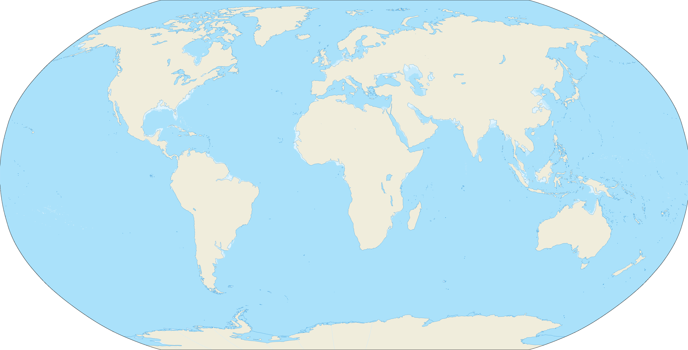

Coastline changes of the Earth during the Flood.
The Flood was one of the most devastating manmade ecological disasters in human history, resulting in the deaths of an estimated 300 million people worldwide, primarily due to rising sea levels which peaked at just under 30 meters in 2041. Although there were several competing theories as to the cause of the Flood, NASA and NOAA climate analysis points to anthropological climate change setting off a minor Clathrate gun reaction that radically increased the rate of melting by the first decade of the 21st century.
The Flood was characterized by a global rise in sea levels causing major ecological, agricultural, economic, and social upheaval to the world starting with the loss of the South Greenland Ice Sheet in 2026. The phenomenon was caused by the extensive burning of hydrocarbons during the petroleum age coupled with decades of deforestation, poor water management, and the natural cycle of polar heating. All of these variables contributed to a severe greenhouse effect that trapped solar radiation and added thermal energy to the atmosphere, causing the average global temperature to ultimately rise by up to 3 degrees Celsius over pre-industrial levels by the time of the Refreeze. The Flood is widely considered to be the greatest disaster in human history.
Causes[]
As Arctic sea ice began to gradually recede, solar radiation could no longer be deflected by polar ice to the extent that it had before the Anthropocene, and instead rapidly heated the seawater surrounding the poles. This, in turn, resulted in an uncontrolled rise of temperatures that would eventually lead to the Arctic being ice-free, rapidly accelerating the pace of global melting. By 2011 Arctic permafrost had begun to melt and released millions of tons of trapped Methane gas into the atmosphere, throwing climate change into overdrive under a Clathrate gun. Most scientific reports of the 2010s predicted melting would continue to be a gradual process, but the compounding effects of global development of previously non-industrial societies, demand for energy to support a booming retiree population, and the exact rate of heating as sea ice continued to recede made these estimates dubious at best, and were constantly replaced by more grim predictions with each passing year. Additionally, interests from the oil, gas, and coal industries lobbied extensively to prevent most governments from acting to reduce carbon emissions or even prepare for the inevitable. Immediately following the Flood, political retribution against major hydrocarbon producers defined the internal politics of many nations.
Antarctic ice also continued to recede in the early 21st century.[1][2]
Chronology[]
Greenland Ice Sheet[]

Greenland's subglacial lake.
While the ice caps and major glaciers had been receding for years, Greenland reached the point of no return by 2020 when the largest series of glacial calvings ever recorded split the Greenland Ice sheet in half, sending the smaller South Greenland Ice Sheet drifting towards the ocean and melting at an accelerated rate as melt-water expanded beneath the massive glacier. Governments local and national made efforts to construct sea walls around major cities, but poorer nations could only prepare for an eventual evacuation. Bizarrely, many millions refused to accept the reality of the situation and refused to relocate. The UN World Ecological Council pooled 50 billion USD to catalog and preserve the genetic information of ocean life that would inevitably die from desalination. By July 2026 the South Greenland Ice Sheet slipped free of the Greenland land mass and fell into the Atlantic Ocean. Efforts were made to break up the glacier or slow its movement, but the displacement sent waves across the North Atlantic that hit the sea walls of every major city and killed millions as they pushed inland past unprotected harbors. Ironically the impact may have saved lives, as it forced a preemptive evacuation before melt-water slowly began to push sea levels up to 7 meters. 2.4 billion people were displaced by this initial flooding, while an estimated 11 million died from either inadequate coastal fortifications or refusal to move. The melt-water desalinated the North Atlantic leading to the worst fishing season on record, which when combined with the loss of critical infrastructure and famrland led to mass starvation. This in turn led to the Revolutions of 2027 and exacerbated the Market Crash of 2027.
Increased rate of melting[]

North America ca. 2049 at the height of the Flood.

Blue Marble 2050
2041 saw Sea levels reach their peak of just under of 30 meters above pre-Anthropocene levels. By the time the world had just gotten used to the new coastlines, a greater disaster came in 2039 with the loss of Antarctica's coast-lying ice sheets, driving sea levels up to just under 30 meters above Pre-Anthropocene levels. All but a handful of the Earth's greatest cities were lost beneath the waves, and only the hearts of once great megalopolises survived. Billions of people were displaced, driving border protection policies by some countries while others aggressively tried to take advantage of potential additions to the workforce. Some of these people desperately tried to flee for the new off-Earth colonies, but Mars quickly reached pre-terraforming capacity, while the outer planets could barely handle a few million more citizens. Most were left on Earth to flee where they could. The most dramatic instances of this second wave of refugees/immigration to the developed world were seen in the low-lying countries that had already contributed substantially to the immigration boom in coastal Russia and North America.
On the mainland, Germany and France found themselves in a similar position with the Dutch and Belgians who had lost the majority of their nations to the sea and formally annexed these territories in 2049.
In the Pacific, facing a demographic disaster from an aging population and the loss of Tokyo to the Sea despite an immense government effort to construct a robust sea wall network, Japan began more aggressive campaigns into the Pacific, Russia, China and South East Asia to secure territory for its displaced population, which flooded by the millions into the Pacific Russian territories and Manchuria. Securing their economic and social claims meant a Naval buildup that conflicted directly with US naval interests, and despite formally cordial relations, the Japanese invested heavily into the construction of satellite tracking and ship destroying missile bases in the South Pacific. Turkey, facing much less loss of territory to the Sea, but rather a need for arable land from a drier equator formalized its presence in the Caucasus with annexation, and a more aggressive presence in Southern Russia and the Ukraine to secure the Don and Volga grain belt. War along the Turkish axis defined the late 30s and much of the 40s as Turkey faced resistance groups to its power and conventional conflicts to secure its interests, culminating in the Friday Revolution in Egypt, where Turkey deployed peacekeepers to secure regional interests following the flooding of Cairo, and effectively took control of the Suez Straight.
Summer of Storms[]
As the planet continued to warm and sea levels rose, the Atlantic Hurricane Season grew longer and more severe. The peak of this was during the Summer of 2043 when a series of Atlantic hurricanes damage or destroy many of Europe and America's last remaining sea walls. The US capitol was temporarily relocated to Columbus, Ohio; Billions of dollars in Fishing industry equipment was destroyed in the Maritimes, and the British Isles saw the collapse of the London, Belfast, Norfolk, and Dublin Sea Walls. The flooding of those cities killed 1.5 million people in either the evacuation or the actual collapse, those that survived were left with few areas to flee in their own countries, resulting in mass migrations to Europe and North America.

Cities affected by rising sea levels.
Areas affected[]

Manhattan Island locked by sea walls. 2050.
North America[]
"During the years 2000 to 2020, more and more evidence was presented by the popular media that human-caused climate change, AKA "Global Warming", was not only real, but presented considerable danger to economic and political stability. The knowledge that certain oil companies had become aware of this problem since the 1970's added to public discontent. While certain vested interests in business and politics attempted to downplay the risk, the damage caused by Hurricanes Ike and Sandy (Texas, 2008 and New York, 2012) sounded warnings, while Hurricane Dorian's swath of destruction across the Bahamas and up the East Coast in 2019,the catastrophic damages caused by Hurricanes Laura and Eta in the Caribbean and Southeast in 2020,and then Hurricane Ida in 2021 with more costly damages than the entire 2020 season,claimed numerous lives and billions of dollars of damage and served as "wake up calls" to the U.S. public. 2024's Atlantic hurricane Beryl set records for earliest storm of its strength. Now, with the menace known, the choice now was which measures to take,and the second Trump administration was not minded to take any. The worry was that, even with the most extreme actions, that any human effort would be far too late."
From "To Stand Against the Tide: A History of the Flood from A North American Perspective", New Harvard Data Files, 2103.
The initial evacuations and sea walls limited the death toll in America substantially, The worst hit areas were the southern halves of Louisiana and Florida. After the initial wave receded the East Coast retained most of its territory and while millions of homes were destroyed, the bulk of the residents of the Eastern Seaboard were able to return home in short order. Of the 8 million climate refugees that remained, most migrated west settling in worker hungry cities like Denver and Dallas. However, those displaced or left to rebuild faced massive debts as Insurance agencies refused to pay out for the billions in damages. The New York Stock Exchange, which had outsourced trading to Chicago in preparation for the evacuation, saw massive losses as many companies simply didn't have the cash on hand to rebuild their damaged assets. Public outrage against these financial institutions (some of whom attempted to embezzle their client's money to repair their headquarters) drove a political upheaval in the US which was only made worse when the markets finally crashed by the winter of 2027. This upheaval was the main factor that led to the election of Alexandria Ocasio-Cortez and the disintegration of the Democratic party, which had enjoyed 8 years of single-party rule in the US. The Flood highlighted a growing problem in the Americas, the labor shortage. Reconstruction of the East Coast simply wasn't feasible with the aging population, and with the exception of the cities where the displaced resettled, all across the country a demand for labor was outstripping supply. New immigration reforms in America and Canada provided perhaps the relief the world so desperately needed as millions of climate refugees came pouring into the US seeking jobs and new homes.
After the loss of the Antarctic ice sheets in 2039 and the Summer of Storms, the Sea Walls could no longer save more than the hearts of the continent's greatest coastal cities, and the further intensification of weather patterns over the years only add more fuels into the already burning fire, prompted government responses. The great North Eastern Megalopolis was shattered beneath the rising tide, most of Florida and Louisiana were now gone, and Delaware was lost completely. In the West Coast, fire seasons became commonplace more and more, already since the late 2010s, eventually destroying a sizable portion of agriculture and leaves millions homeless, while Los Angeles was completely destroyed, evacuated, and abandoned in the late 2020s. The situation wasn’t any better in the East Coast, as collapse of the gulf stream seriously disrupts the rain cycle from the Appalachians to India, leading to food shortages, while hurricanes in the North Atlantic become more intense and regular. At the same time in the South, Hurricane season is now year round and at its peak Category 5 hurricanes are regular occurrences, leading to a Southron Diaspora. Another infamous example of worsening weathers was in Northern US, where winters are even harsher, accompanied with commonly occurring strong blizzards, and it deteriorated to the point that local and state governments have to place curfews and many other climate emergency measures, which last for years, in effect to keep people of dying when exposed to these fatal cold winters, nicknamed “Niflheim” by the locals based directly on the cold realm of Yggdrasil in Norse Mythology. Over 70 million people moved further inland once again in the largest mass-migration in American history. Many demographics disappeared in the US during the flood, and wholly new ones were born through the shift of various cultures into small concentrated pockets. The Recession of 2041 still did not stop the migration of immigrants to the US as more were needed to provide new housing in the American interior. Denver, Colorado became the largest city in the world during this time, saved by some of the last reliable glacial melt-water and a booming tech sector.
The mass migrations caused by the Flood pushed America's population inward. The Gulf Coast and California saw the largest reductions in population as hurricanes left the Southeast all but uninhabitable, and the loss of the San Joaquin valley's agribusiness and water resources forced millions to resettle North and inland. The Southwestern economy's investment in the Solar industry and advanced manufacturing allowed those states to endure hotter summers and drier climates, and as a result the Sunbelt became the industrial heartland of America. As the cities of the Great Lakes held the last undamaged harbors on the continent, the bulk of all Atlantic trade began to flow into the Midwest, bringing an economic revival to those states, aided by new housing and transportation infrastructures, alongside with a still fairly strong agricultural sector. The region was generally considered the most livable as it was too far inland to suffer from the perpetual hurricanes of the gulf coast, and the winters were more fair than before. After the East Coast cities were partially reclaimed by Sea Walls, they remained important business centers, but America's economic heartland moved from the coasts to the interior and would stay that way until the late 2060s when the Coasts were largely reclaimed (though the economic decline of the Midwest wasn't really felt until the 2090s, and even then it was nowhere near as severe as it was in the late 20th century).
Europe[]
The rising sea levels affected all of coastal Europe save for much of the Iberian peninsula and the Balkans. But the first wave hit the Netherlands hardest. 70% of the country was lost to the sea, and most of the population was forced into Germany. The German Sea Walls in Hamburg held, and with the country relatively undamaged and starved for workers, the Dutch expatriates were allowed to settle in Germany with little resistance. The rest of Europe survived the Flood behind hastily constructed sea walls that spared most of the continent from much hardship during the first wave, save for Denmark who's Copenhagen sea wall failed in 2030 after the July 19th Attacks. Sweden, largely spared of the worst of the flooding, agreed to cede historically Danish Scania back to Denmark to house the refugees from the country. Great Britain weathered the first wave of the flood better than most had expected. The Scottish Highlands, Ireland and the islands of the North Sea broke the largest waves that came barreling towards Europe, and the sea walls around London, Edinburgh, and Norfolk held the worst of the waters back. Ireland was not so lucky, a full evacuation of the country was carried out over the course of the years after the Greenland Ice Sheet calved, settling Irish Refugees in England, Wales, and mainland Europe. They returned to find their homeland devastated. Many simply left for Britain, America, or Canada while those that stayed behind attempted to rebuild the country.
The rise in sea levels from 2039 to 2041 put additional strain on the Sea Walls, but the Summer of Storms in 2043 destroyed all but the strongest walls. With the storm of 2043, London and many major British cities were left underwater, with little hope of reversing the damage. With Australia's drought leaving the land virtually uninhabitable, and few other options available to them, a great British migration to the Americas occurred in late 2043 through much of the decade. With the Atlantic seaboard flooded, most settled in the American heartland like many refugees had for the last decade. Those that did not settle in the United States made it to Newfoundland, and the newly independent first nations in the Arctic Circle to capitalize on the demand for skilled labor in the petroleum industry. Newfoundland went so far as to achieve independence from Canada proper in 2048, taking advantage of geographic isolation via Quebec. What remained of the United Kingdom quickly fractured. Scotland formalized its independence in 2044, Ireland reunified after the British military pulled out of Ulster to secure the British mainland, but to secure Britain itself the United States positioned 10,000 military and humanitarian operators in the former UK. By 2045 the British Parliament dissolved the monarchy to take direct control of its remaining lands to secure population interests, and the Republic of Britain became little more than an American protectorate.
China[]
China suffered more from the flood than almost any other industrialized nation. With the vast majority of its population concentrated on the coastal megalopolises, well over 100 million people were forced inland after the loss of the Greenland Ice Sheet. With an already hegemonic regime trying to maintain order in the refugee camps on the coast, the rise in water levels also attributed to the bursting of the Three Gorges Dam, destroying many inland cities along the Yangtze farm belt. Between the refugee crisis, low crop production, and the ongoing purges of the local party leaders, China fell into chaos with the Revolutions of 2027.
After the loss of its frontier provinces, China entered into a semi-stable period as the communist government in Beijing consolidated power and cracked down on civil unrest. The only restriction that wasn't placed on the Chinese population was free travel to the Americas where the need for labor was still a promising alternative. When the sea levels began to rise again in the Summer of 2039, the sea walls at Beijing and Shanghai finally broke, leaving 300 million people without any reliable source of food, shelter, or clean water. Japan took this opportunity to create its Extraterritorial Districts, but after the Chinese Food Riots of 2041, Japan deployed forces to restore order in key positions in China.
India[]
India was devastated by the Flood, not directly, but by the instability created in its neighboring states. The rising tide and resultant famine lead to coup and civil war in Pakistan and the largest single mass migration of the era when 80 million Bangladeshis were driven from their homes to resettle in the Seven Sister States of India. After pleading with the international community for assistance, the US, and Iran agreed to aid in the removal of nuclear weapons from former Pakistan, and they granted a chaotic Kashmir independence after refugees from Pakistan's collapse caused massive unrest, so they could focus on fighting Bangladesh. Eventually, after 2 years of confused fighting between Indian, Bangladeshi and other ethnic militia forces, India agreed to cede the Seven Sisters and West Bengal to Bangladesh to keep their resources focused on keeping the rest of the country together. Food shortages, riots, and military defections were the order of the day for India for over a decade as the nation's military made every attempt to keep the country together. The national government cracked down on civil liberties, nationalized agriculture and briefly instituted a 1-Child Policy to hold the country together.
Japan[]
Japan suffered greatly from the flood, as the Tokyo and Kyoto Metroplexes were largely submerged by the rising tide driving most of Japan's population of traditionally city dwellers into the Japanese countryside. Most of the Japanese Population took refuge in the mountains of Hokaido, an ironic twist for the native Ainu people who now found themselves in the care of those who nearly drove them into oblivion. Japan established several "Extraterritorial Districts" across the North Pacific in the Special Economic Regions that had been already set up after the collapse of China and the break-up of Russia. Millions of Japanese citizens effectively colonized the North-Pacific Coast of Eurasia, and there were even attempts to set up zones in Pacific Canada (today Cook and Cascadia). The creation of these districts lead to Japan's military adventurism in Asia, leading many to believe that WWIII might have been avoidable without the Flood.
North Africa[]
South America[]
Ecologically, no continent suffered more than South America. The Flood turned a sizable portion of the Amazon Rainforest, home to more biodiversity than anywhere else on Earth, into a brackish Swamp. The damage done by this would have been permanent if not for the Earth Working Group. A number of wars were fought between Brazil and Argentina for control of what remained of the Rio de la Plata farm belt during this period.
Oceania[]
Australia suffered greatly from the Flood, with a massive drought that left the Australian interior virtually uninhabitable, while coastal cities such as Darwin and Sydney were threatened by the rising tides. New Zealand, meanwhile, saw its economy crumble upon Australia facing ruin and China's economy contracting. By 2050, three million of New Zealand's five million people would flee to North America to take advantage of the demand for skilled labor which heavily favored English-speaking immigrants. Australia's 35 million citizens saw similar effects, with over 20 million people fleeing to the United States and Canada, while a small minority fled to New Guinea.
After the Third World War, Australia and New Zealand, along with Newfoundland and Britain, would enter a Compact of Free Association with the US. The bulk of their populations still remained in the US, many of whom had either become citizens or had children who were by right citizens, and as such tax revenue to support a large military (in Britain's case to counter the Poles in Europe) was still below required levels. Thus the US formalized the relationship established during the war, in which they would station a sizable number of troops in these countries both as a staging point and as a means of economic relief. After the refreeze saw a return of many of their former citizens to their homelands, enough time had passed that the cultural distinctiveness between America and the rest of the Anglosphere had eroded away. This would see the rise of proponents for full annexation of these countries. The movement would gain momentum in the wake of the First Nations War, which subsequently saw calls for Canadian Annexation. This would result in the Union Act of 2073, which passed the House and Senate in 2070 and 2072 respectively. Following votes by the Australian, British, and New Zealand Parliaments affirming their desire to join the Union, the Act was signed by President Carla Anderson as her last act in office.
Sub-Saharan Africa[]
While flooding in Africa did obliterate a few of the smallest coastal nations, only three major cities were lost to the Sea, with Cairo being the largest by far after its sea wall ruptured in 2039.
Legacy[]
Thanks to the efforts of the Earth Working Group, humanity began reversing the effects of the Flood in the 2040s. It is generally agreed by historians that the Flood, at least in the literal sense of the word, officially came to an end in 2065 when global sea levels at last completely reverted to pre-Anthropocene levels. Despite this, however, it would take generations to completely reverse ecological damage and even in the present day, efforts are still being undertaken to repair the Earth's biosphere.
The Flood was simply put the greatest man-made disaster in history, leading to the extinction of countless species, and generally reducing the quality of life of humans around the world. Today, the Flood's biggest legacy is its psychological impact on humans. Before, humanity operated under the consistent belief that it could exploit their planets natural resources without fear of long-term consequences. The Flood proved them wrong and made it clear that as the dominant species, they must operate with consideration for any and all repercussions.